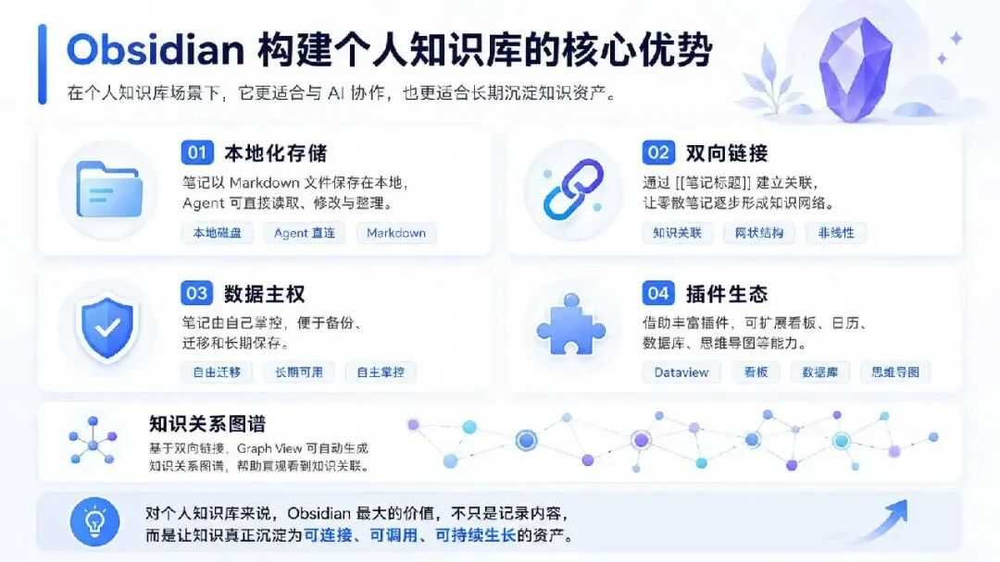
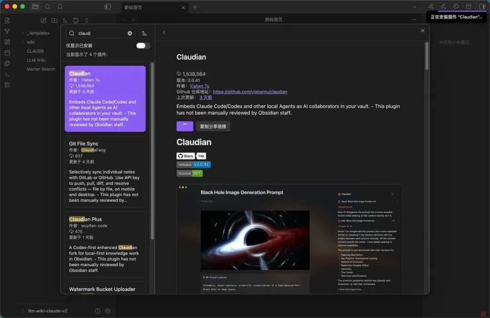
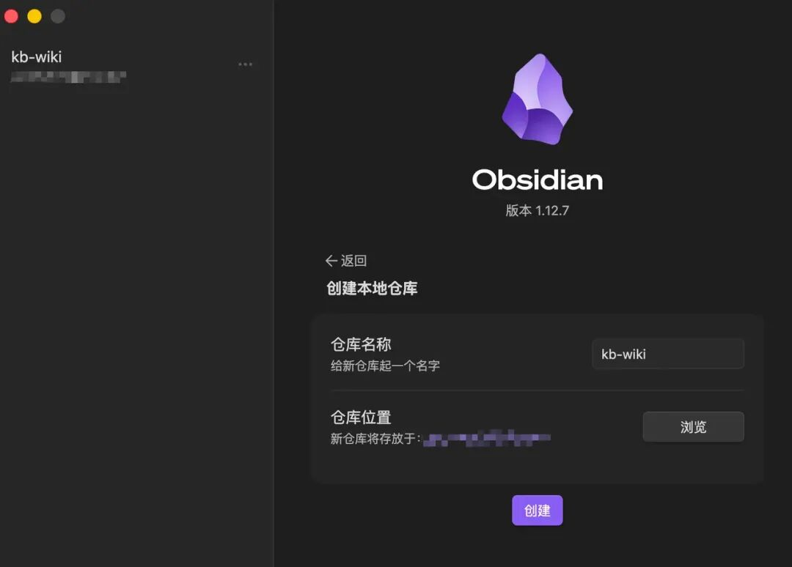
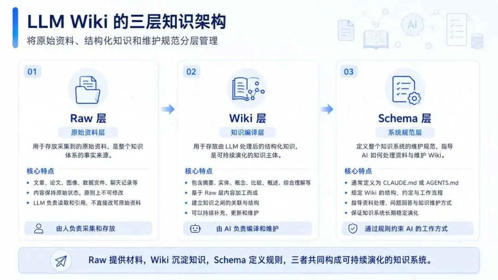
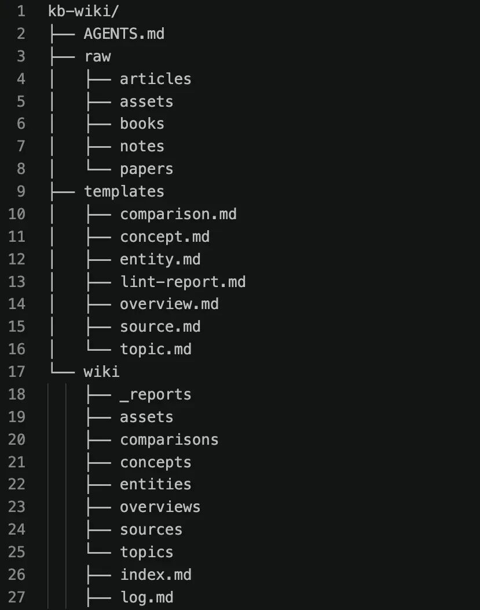
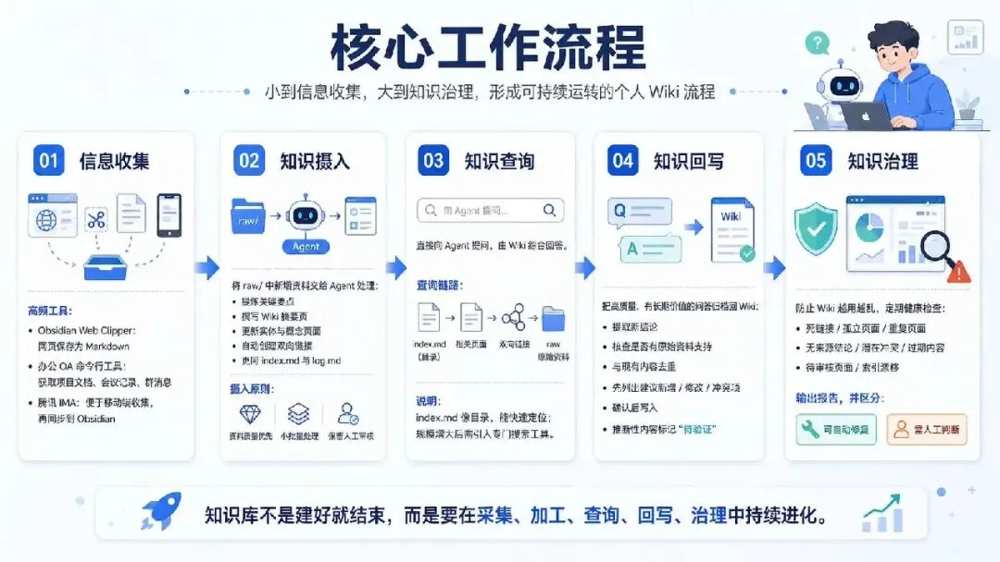

想要深度学习 AI 体系的同学，可看文章图一：如何进入 AI 行业？这是我目前最确定的一条学习路线
书接上文：《我用 WorkBuddy + Obsidian 搭了一遍个人知识库》
之前我们介绍了很多构建企业知识库的方案，今天这篇文章介绍下如何构建个人知识库。
首先我们要理解，在 AI 时代，为什么构建个人知识库会变得越来越重要？
大模型本身是没有长期记忆的。一个会话聊完以后，再新开一个会话，AI 就不记得我们之前聊过什么，也不了解我们的做事风格、思考模式、决策逻辑，以及当前项目的上下文。
所以每次让 AI 帮我们写文章、做 PPT、画图、整理方案时，我们都不得不反复补充这些背景信息。比如我们希望文章是什么风格，PPT 的结构逻辑是什么，画图时偏好什么样的表达方式。如果不提前交代清楚，最后生成出来的内容就很容易不符合预期，甚至带着一股浓厚的 AI 味。
如果我们把这些经验和上下文持续沉淀下来，形成自己的个人知识库，那么每次跟 AI 对话时，就可以让它先读取知识库，再基于我们的知识、逻辑和风格执行任务。
并且这个知识库不只服务于某一个工具，而是可以应用到所有桌面端 Agent。只要 Agent 能访问本地知识库，就可以在每次会话中调用其中的内容，从而减少大量重复的上下文补充。
为什么选择Obsidian?
当前主流的个人知识库管理方案有很多，比如腾讯IMA、语雀、印象笔记、Get笔记、NoteBookLM、Notion、Obsidian等。

这些笔记软件中，目前最火的就是Obsidian。它火的逻辑是什么呢？
除了Obsidian之外，其它都是云端笔记，从个人体验来说，云端笔记软件的体验其实更好，因为使用简单，并且可以轻松的实现多端内容同步。
但是从AI协作友好的角度来说，体验最好的还是Obsidian。
因为它的知识文件以markdown格式保存在本地电脑磁盘中的，本地Agent可以很轻松的访问和修改。
而云端笔记如果要接入本地 Agent 进行管理，通常只能通过官方提供的命令行工具或者 MCP 服务来完成，执行链路更长。如果官方没有提供对应的能力，就很难接入 Agent 中使用。
同时，个人拥有绝对的数据主权，不被平台死死绑定，哪怕后面Obsidian也停止运营，我们仍然可以用VS Code这类文本编辑器打开这些笔记。
Obsidian另一个重要的优势是，支持用双向链接去关联知识，通过[[笔记标题]]语法，就能在两篇笔记间创建双向链接，形成一个非线性的、发散的网状知识结构，像我们大脑联想的方式。我们在做知识检索的时候，就能通过这些关联链接，查询到相关的知识。
因此在构建个人知识库这个场景下，Obsidian是很有优势的。
如何让Agent访问Obsidian？
常见的接入方式有两种。
方式一：在 Obsidian 内部使用 Agent 插件
安装Claudian插件，可以把Claude code、Codex、OpenCode、Pi等Agent接入Obsidian侧边栏，这样可以直接在笔记软件中对话、选中文本修改或让 Agent 操作仓库。
Claudian插件安装，步骤如下：
打开设置 -> 第三方插件 -> 关闭安全模式
社区插件市场中搜索Claudian，点击安装
安装完成后，点击启用
然后在Claudian中激活对应的Agent工具

这种方式的优势就是不用切换软件，操作最方便。但是需要本地电脑上安装Claude code 或者Codex的CLI命令行工具。
方式二：直接让桌面 Agent 打开同一个文件夹
首先使用Obsidian创建一个本地仓库

然后打开WorkBuddy，新建一个会话，工作空间选择刚刚在Obsidian中创建的项目文件夹。
这样Obsidian、WorkBuddy这两个软件的工作空间都指向了同一个本地目录，Agent就能读取到知识库中的文件内容了。
除了Workbuddy，用其它的Agent也可以，比如Codex、Trae、Cursor，并不限制使用某种Agent工具。
这也是Obsidian本地文件笔记的独特优势，任何本地Agent都能便捷的操纵它。
如何组织我们的知识？
通过前面的介绍，我们已经解决了工具和接入方式的问题。但还有一个更关键的问题：知识应该如何被组织？Agent 又应该按照什么规则维护它？
当前最流行的知识组织方式为，karpathy提出的LLM wiki，下面我们来看LLM wiki到底是什么？
LLM wiki 是karpathy今年4月在Github上公开的一份个人知识库构想文件，大致描述了个人知识库构建方案的架构和理念，但没有说明具体如何搭建。
他指出了传统RAG检索的弊端，每次问答都是从海量的知识碎片里面去寻找相似的文档，然后在临时组装生成答案，知识和经验并没有被持续沉淀下来。

而LLM wiki整体分为三层架构：
raw层，用于存放采集的原始资料，比如我们看到的文章、论文、图像、数据文件、以及聊天记录等，这些内容是不可变的，LLM只负责读取但是不会修改它们，这些内容是整个知识体系的事实来源。 wiki层，相当编译层，用于存放由LLM处理后的结构化知识，包含摘要、实体、概念、比较、概述、综合理解等，这一层主要是由LLM维护更新，基于raw层的知识编译而成。 schema层，定义整个知识系统的维护规范，通常定义为CLAUDE.md或者AGENTS.md，它告诉大模型Wiki的结构、约定以及处理资料来源、问题回答或者维护wiki时应该遵循的工作流程。
提前把知识编译成一个可持续演化的知识结构，一次编译，持续复用。
于是就有了Obsidian + Workbuddy + LLM wiki这套知识库构建方案。
其中Obsidian承担文件管理或可视化的职责，而LLM wiki是一套构建知识库系统的框架，Workbuddy则是负责整理我们的知识。
了解完LLM wiki的架构之后，我们再进一步看如何搭建实现。
目录结构设计
根据前面的LLM Wiki的原则，我们在Obsidian中把目录文件层级设置为如下结构：

每个目录文件的职责定义：
raw存放原始资料，里面的目录结构可以自定义，根据自己的实际需求进行分类； AGENTS.md就相当于Schema层，是指导WorkBuddy维护wiki的工作原则； wiki就是经过AI编译后结构化知识，按照摘要、实体、概念、比较、概述、综合理解 进行组织 index.md是wiki内容的索引文件，便于快速找到目标内容； log.md是用于记录每次操作的日志，比如什么时间写入了什么知识、新增了哪些内容等； templates用于给AI生成wiki时参考的模板文件，与wiki下面的目录结构一一对应。
Schema：整个系统真正的核心
Schema层相当于就是定义AGENTS.md文件，指导Agent如何工作。
它是整个Wiki系统的灵魂，负责告诉Agent的角色是啥、目录结构怎么维护、从哪里读取素材、素材怎么编译、摘要怎么写、链接怎么创建等等。
这个文件的内容并不是一劳永逸或者一蹴而就的，需要我们持续的维护更新，直到表现稳定。
项目初始的时候，我们可以让Agent基于LLM wiki生成一份初始版本，后续此基础上进行迭代
请参考 Karpathy 的 LLM Wiki 架构，为当前个人知识库生成一份 `AGENTS.md`。请定义目录职责，以及资料摄入、知识查询、问答回写、健康检查和来源引用流程。未经人工确认，不得把推断性内容标记为已审核知识。
核心工作流程
整体流程中最为关键是，数据怎么采集、知识怎么加工、如何查询、怎么保持加工的质量能够稳定持续、如何把优质问答写入wiki。

下面依次来看这几个核心工作流程：
信息收集
高频使用的信息收集工具：
Obsidian Web Clipper
这是Obsidian官方推荐的浏览器插件，可以帮我们快速的把网页内容以markdown格式保存到仓库中去。
办公OA 命令行工具
通过飞书CLI工具拿到项目文档、会议记录、项目群消息等。
腾讯IMA
IMA用来做移动端的信息收集非常方便，然后再通过自动化任务把IMA中的信息同步到Obsidian中。
知识摄入
将新资料放入原始资料文件中，并指示Agent进行处理。
阅读当前项目raw/中新增的文件，按照项目根目录中的AGENTS.md的规范，编译知识
工作流程如下：LLM 读取资料，与你探讨关键要点，在 Wiki 中撰写摘要页面，更新 Wiki 中相关的实体与概念页面，并自动创建双向链接。此外，还会更新wiki的索引文件index.md，以及把本次知识写入的日志更新到log.md中。
摄入时建议遵循三个原则：
资料质量优先，不要一股脑的把看到的文章都直接塞入进来，先判断来源是否可靠、完整和适合长期保存。 小批量处理，因为上下文更短和内容更聚焦。如果单次知识摄入太多、或主题分散的时候，抽离的质量会出现明显下降，对应的概念、实体、结论会漏掉。 保留人工审核，人负责判断重点、纠正错误并确认关键结论。如果全程无人参与，任由大模型自由发挥，wiki的质量无法得到保证。
知识查询
查询时直接向Agent提问即可，它会根据wiki中沉淀下来的知识，进行综合回答。
比如我问：
根据 Wiki，解释一下LLM wiki的工作原理是什么，它与传统的RAG有啥区别？
查询的工作链路：
Agent会先读index.md这个索引文件，判断哪些页面跟当前问题相关，然后在进一步读取相关页面，进入到wiki子页面后，如果发现内容不足，在沿着双向链接进一步阅读相关内容。如果wiki内容不足，再返回/raw查询原始资料。
这里的索引文件的作用相当于一本书籍的目录结构，可以快速的定位到对应的章节，降低查找成本。但它不是无限扩展的检索方案，规模增大后，就要引入专门的搜索工具。
知识回写
如果回答质量高、有沉淀价值，我们可以把对话内容归档到wiki中去，使用如下命令：
从当前问答中提取有长期价值的新结论，检查是否有原始资料支持，并与现有 Wiki 去重。先列出建议新增、修改或标记冲突的内容，得到确认后再写入。推断性内容必须标记为待验证。
以后再问同样的问题时，就能直接基于现成答案进行回答，而不是去wiki里面找相关的页面然后在组织答案。
知识治理：防止Wiki 越勇越乱
wiki页面的生成大部分都是依靠LLM，而人工只负责审核，随着知识库页面的增长，问题就会逐渐出现：孤立页面、死链接、过期结论、缺失页面、交叉引用缺失、元信息缺失、索引漂移、知识矛盾等。
因此需要让 Agent 执行健康检查，例如：
检查当前知识库的死链接、孤立页面、重复页面、无来源结论、潜在冲突、过期内容、待审核页面和索引漂移。生成报告，并区分可以自动修复的问题和需要人工判断的问题。未经确认，不要改动存在事实冲突的内容。
建议定期检测，比如每批资料摄入后或者每周，就做一次健康检查，让知识库wiki始终保持健康状态。
规模变大后，如何升级检索？
前面讲的查询流程，默认是先查 index.md，再查相关页面。这种方式对于几十到几百个 Wiki 页面的知识库很高效，但当 wiki 持续变大之后，检索效率就会下降，Token 消耗也会变大。
要解决这个性能瓶颈，可以集成 qmd 本地检索方案。它的核心流程是：
先把 wiki 页面拆分为小的 chunk； 给每个 chunk 生成上下文前缀，确保这个 chunk 脱离原文也能被理解； 基于这些 chunk 构建 BM25 关键词索引； 查询时先用 BM25 召回候选片段，再用向量相似度做语义重排； Agent 读取命中的原始页面，再生成最终答案。
注意，这里的方案是基于 BM25 关键词进行检索的，而不是纯向量检索。向量主要用于语义重排。之所以这样做，是因为本地知识库内容经常变化，纯向量索引的维护成本比较高。
所以，只有当你的个人知识库真正出现性能瓶颈时，才建议激活使用这类本地检索方案。
这套方案的边界
LLM wiki 这套方案目前更适合个人知识管理，放到企业场景中并不一定合适。
首先，数据规模就是一道门槛。当 wiki 文档数量膨胀到成百上千个时，每次新增知识编译或者查询，Token 消耗都会显著上升，甚至 index.md 的索引内容可能就会撑爆上下文窗口，带来较高的成本和性能压力。
其次是权限管理。企业级知识库通常需要细粒度的权限访问控制，而 LLM wiki 目前对权限隔离的支持还不完善，难以满足企业级安全合规要求。
另外，知识引用的可溯源性也存在隐患。企业场景对来源追溯要求很高，尤其是医疗、法律等严肃场景。RAG 方案可以明确回答是基于哪个文档中的哪一段内容，而 LLM wiki 生成的内容本质上依赖模型对原始知识的理解与重组，存在产生幻觉和错误关联的风险。一旦这类偏差被写入 wiki，就可能误导后续所有查询结果。
因此，LLM wiki 的使用还是要分场景。对于个人知识库构建、学习研究等低风险场景，它的效率高、体验好；但如果用于企业知识库构建，就需要结合数据规模、权限要求和引用准确性进行评估。
结语
这套方案的难点是如何平衡人的参与程度，投入时间太多，是很难长期坚持的，如果完全交给 Agent 自动运行，Wiki 的质量又难以保证。
因此，建议先从一个高频、明确的小场景开始，把它做深、做稳，能真正用起来：